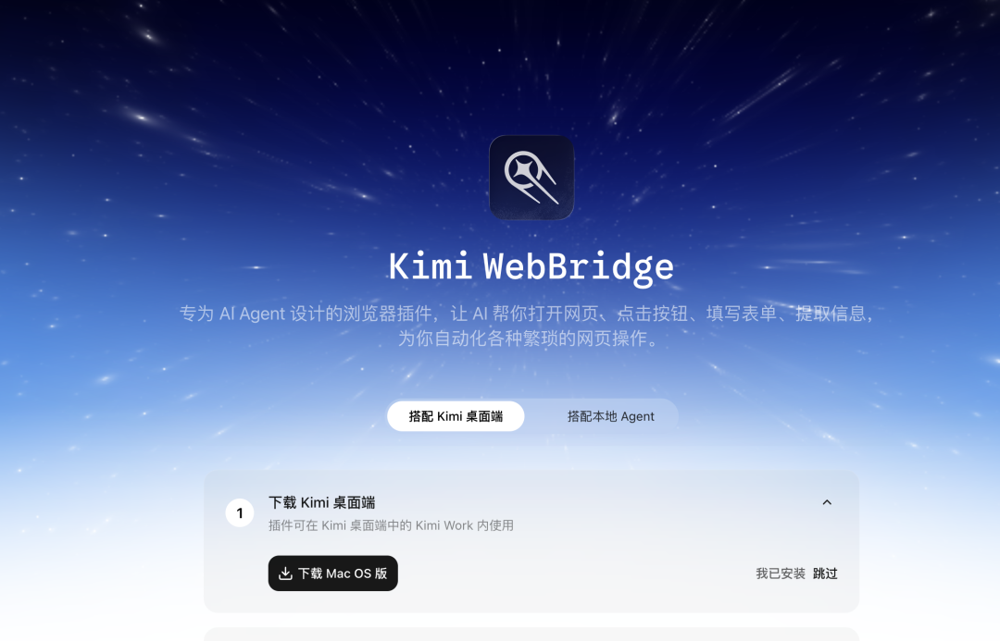

你好，我是小 G。
最近各家 AI 产品在往同一个方向走：读文件、操工具、最后交结果。
Anthropic 的 Claude Cowork 和 OpenAI 的 Codex 做的都是这件事，切入角度不同，核心逻辑一致。
Kimi 前几天也发布了国产版 Kimi Work，我体验了几天，真的很上头。
它能读本地文件，通过 WebBridge 操作浏览器，支持定时任务，还有一个很炸裂的 Agent Swarm 功能：一个任务最多调度 300 个子 Agent 并行跑。

Kimi Work 是什么
Kimi Work 是 Kimi 电脑客户端里的桌面 Agent 模式。
注意，是桌面工作台，不是聊天窗口。
大概能干这几件事：
读本地文件，帮你整理； 打开浏览器，读网页、点按钮、下资料； 写文档、表格和 PPT； 挂定时任务，固定时间自动跑； 接专业数据源，金融和学术的都有； 复杂任务拆成子 Agent 并行，最多 300 个。
跟网页版的差别很直接：网页版偏聊，Work 偏干活。你把一件要查资料、整理、最后出成品的事甩给它，它自己跑完。
安装入口是这个，支持 Mac（Apple 芯片）和 Windows：
https://www.kimi.com/zh-cn/products/kimi-work

打开 Kimi 电脑客户端，选择 Work 模式，然后勾选 K2.6 Agent 集群，就可以开始让它处理桌面端任务。
下面我们通过几个实际的场景来演示一下。
300 个 Agent 并行工作
做了一个 AI 热点定时雷达
AI 圈的信息太碎了，官方博客、GitHub Trending、Hugging Face Spaces、Hacker News、X、Reddit 等等都要关注。
如果自己做这件事情的话，虽然不难，但太繁琐了，很费时间。
于是我把任务拆给 Kimi Work，让它按“定时任务 + 浏览器抓取 + 多 Agent 筛选 + 多产物交付”的方式跑。
这是提示词：
请执行 AI 开源项目每日扫描任务：
1. 并行扫描以下平台过去 24 小时内的 AI 开源项目动态：
- GitHub Trending（github.com/trending，关注 AI/ML 相关仓库）
- Hugging Face（huggingface.co/spaces 和热门模型）
- Product Hunt（producthunt.com，筛选 AI 开发者工具）
- Hacker News（news.ycombinator.com，搜索 AI/ML 相关热门帖）
- 主流 AI 公司博客（OpenAI/Anthropic/Google DeepMind/Meta AI/Mistral/Cohere 的最新发布）
2. 按以下四维度筛选 Top 5（每项 1-5 分）：
- 程序员相关性：是否直接面向开发者，是否有代码/工具属性
- 可玩性：能否在 1-2 小时内跑通最小 Demo
- 写作价值：是否有技术深度、独特视角、可产出文章
- 避坑指数：文档是否完善、社区是否活跃、依赖是否复杂（分数越高越不容易踩坑）
3. 为 Top 1 项目生成 1-2 小时实测任务单，包括：
- 安装步骤（必须可验证，不确定写"待核实"）
- 最小 Demo 命令/代码
- 测试任务清单
- 截图清单
- 可能踩坑点
- 建议文章标题
- 待核实信息列表
4. 输出要求：
- 所有关键结论必须给来源链接
- 不确定的地方写"待核实"
- 不要编造命令、参数或性能数据
- 不做 AI 新闻日报，只聚焦可动手体验的开源项目
- 最终输出保存为 Markdown 文件到当前工作区
请使用多个子代理并行完成扫描，然后整合结果。
Kimi Work 会开启多个 SubAgent 并行处理：

这是最终的 AI 热点抓取结果：

Kimi Work 支持定时任务，像 AI 热点这种每天固定要跑的信息采集，设成定时就不用手动触发了。
我这里设置的是每天早上 8:30 执行，这样等我 9 点工作就能直接拿到结果。

股票分析：夯！
Kimi Work 还有一类能力我前面没展开说：专业数据源。
它内置了同花顺、ifind、天眼查、Yahoo Finance、World Bank、Binance、arXiv、Google Scholar 等数据源。
我们直接利用专业数据源加上多 Agent 角色协作，来模拟一个完整的投研团队。
研究员收集事实，基本面分析师看财务，技术分析师看 K 线，舆情分析师看情绪，风险官专门找反面证据，最后投资经理把所有人的结论整合成一份投委会纪要。
这 6 个角色，正好对应 6 个 Agent。
提示词大概是这样的，启动 6 个子 Agent 并行工作，每个角色有自己的职责边界和输出格式，最终汇总成一套投委会交付物：
请你模拟一个股票投研团队，对【股票名称/代码】进行一次"AI 投资委员会"分析。
注意：
本任务仅用于研究和产品能力展示，不构成任何真实投资建议。
请不要直接输出"买入/卖出/加仓/清仓"等交易指令。
所有结论必须有数据来源，无法确认的信息标记为"待核实"。
请启动多个子 Agent 并行工作，角色如下：
## 角色一：研究员 Researcher
职责：收集该股票最近的行情、公告、财报、研报摘要、行业新闻和公司动态。
只做客观信息聚合，不做主观投资判断。
## 角色二：基本面分析师 Fundamental Analyst
职责：分析公司的收入结构、利润变化、毛利率、现金流、估值、行业竞争格局。
判断基本面是否出现变化，但不要给交易建议。
## 角色三：技术分析师 Technical Analyst
职责：分析股价走势、K 线、均线、MACD、RSI、KDJ、布林带、成交量。
识别关键支撑位、压力位和趋势状态。
## 角色四：舆情分析师 Sentiment Analyst
职责：分析财经新闻评论、社交平台讨论中的市场情绪。
识别散户情绪、市场热度、争议焦点和潜在误读。
## 角色五：风险官 Risk Officer
职责：专门寻找反面证据和风险事件。
包括监管风险、诉讼风险、股东减持、限售解禁、业绩不及预期等。
## 角色六：投资经理 Portfolio Manager
职责：不直接查询新数据，只阅读以上五位角色的报告，
组织一次投资委员会总结。
最终交付物：
1. 一份 Word 总报告；
2. 一张 Excel 数据来源与证据表；
3. 一份 Markdown 投委会纪要；
4. 一份风险清单；
5. 一页纸投资经理总结。
实际跑起来是这样的效果：

可以看到，为了确保内容的正确性，角色之间有交叉验证的。
6 个角色各自输出分析报告：

投资经理汇总所有分析后，生成最终的投委会纪要：

我看了一下，每一个研究员的报告中的数据和结论都是非常专业的。
对于我这种平时很忙，但又喜欢研究下股票的人来说，真的省事不少。
定制股票分析 Skill
后来我反复用了几次，发现这个 Prompt 非常好用，换一只股票基本不用怎么改。
为了更方便实用，我直接将其封装成了一个 Skill。
简单说，Skill 是一份可被 Agent 发现、按需加载的任务说明。它会把某类任务的经验、约束和执行顺序沉淀下来，让 Agent 在需要时再读。
Kimi Work 支持三类技能：内置技能、技能市场安装、自定义技能。

我们直接让 Kimi Work 根据我们刚刚提供的提示词生成一个 Skill。
Skill 的生成过程如下：

最后生成的成品也是非常规范，符合我在SKILL.md 到底怎么写？中提到的 Skill 优秀设计。
下面是整个 Skill 的核心亮点：

使用这个 Skill 也是非常简单。这里我们直接对比亚迪进行一波分析：

分析完成之后，Kimi Work 会输出一份工作报告：

WebBridge 浏览器自动操作
Kimi Work 的 WebBridge 能直接操作浏览器。

第一次执行的时候会提示你安装 Kimi WebBridge 浏览器扩展 。


装好之后，Kimi Work 就能直接帮你自动操作浏览器了。
我这里直接让它来到我的公众号浏览器后台，看看最近的文章数据。
最终的统计结果如下：

亮点和不足
用了这几天，说说真实感受。
亮点：
WebBridge 浏览器控制很实用。 对信息收集密集型的工作帮助很大，尤其是那种通过搜索获取不到信息的网站。 300 个 Agent 并行是真的能跑。 不是噱头，复杂任务拆成多个子 Agent 各干各的，效率确实高。一个 Agent 只干一件事，比什么都塞给单个 Agent 效果稳很多。 专业数据源。 金融和学术场景下，能直接调同花顺、天眼查、arXiv 这类结构化数据，准确度比纯靠浏览器搜索高不少。 Skill 沉淀。 把反复跑的 Prompt 封成 Skill，下次一句话就能起来。就像我把股票分析封进去之后，换只股票直接用，不用每次重写提示词。
不足：
速度偏慢。 复杂任务跑一圈要等不少时间，跟 Codex 和 Claude Code 比差距明显。目前还是 Beta，后面怎么优化看实际表现吧。 缺少 Plan 模式。 目前它上来就直接干活，没有先让你确认需求、收敛范围再执行的功能。如果你需求没想清楚就开跑，中间可能需要反复调整。 长任务偶尔会不稳定。 我遇到过浏览器读取失败、中间步骤超时的情况，需要手动介入。
它能帮你省掉大量重复劳动，但不能替代你对事实、业务和最终结论负责。
最后
编程领域已经有了 Vibe Coding——你不用手写代码，描述需求 AI 就帮你写完。办公领域也在出现类似的变化：Vibe Working——你不用自己一个个打开网页、复制粘贴、排版做表，描述清楚需求，AI 替你跑完。
Kimi Work 这类产品，指向的就是这个方向。
以前我们问 AI：“这件事怎么做？”
现在更像是对 AI 说：“这些材料在这里，这些网页你去看，最后给我一套能交付的东西。”
差别很大。
一个是回答，一个是执行。
Kimi Work 还在 Beta 阶段，长任务稳定性、浏览器操作成功率、复杂交付物质量，都还需要继续看实际表现。
但它的方向是对的。
300 个 Agent、WebBridge、本地文件、定时任务、专业数据源、Skill 沉淀，这些能力放在一起，能接住很多知识工作里最繁琐的部分。

⭐️推荐阅读:
《SpringAI 智能面试平台》（2.0 版本已开源）(Star 数量 2.1k+) AI 应用开发面试指南：大模型、Agent、RAG、MCP、Prompt 工程(累计阅读接近 50w+) AI 编程实战指南：Claude Code、Cursor、Codex、Trae 使用技巧与面试题(累计阅读接近 70w+)